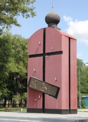
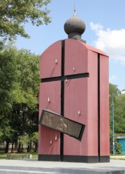

Места нашей области, посвящённые Великой Победе
 Домой
Домой
Мемориальный комплекс на Новолипецком
Мемориальный комплекс сооружён в 1995 году к 50-летию Победы, в память о новолипчанах, погибших в годы Великой Отечественной войны. Торжественное открытие мемориального комплекса состоялось 9 мая 1995 года. Более 2-х тысяч работников новолипецкого металлургического завода сражались на фронтах Великой Отечественной войны. Более 620 человек не вернулись с полей сражений, из них более 300 пропали без вести.
Центральное место комплекса занимает стела в виде часовни. На одной из сторон стелы изображен христианский крест, олицетворяющий тяжкие испытания нашего народа в годы войны. На фоне красной стелы выделяются крупные блестящие капли, отлитые из металла. Эти капли символизируют слезы о тех, кто уже никогда не вернется с войны, а также кровь, пролитую погибшими защитниками Отечества. На другой стороне стелы – образ иконы Георгия Победоносца. Ниже – надпись: «1941–1945. Новолипецким металлургам, погибшим в годы Великой Отечественной войны». Обрамляют композицию полуциркульные конструкции с закрепленными на них металлическими плитами-табличками. На плитах высечены имена новолипчан, погибших и пропавших без вести на фронтах Великой Отечественной войны. Конструкции украшают две арки с колоколами.
Изображения:
 
